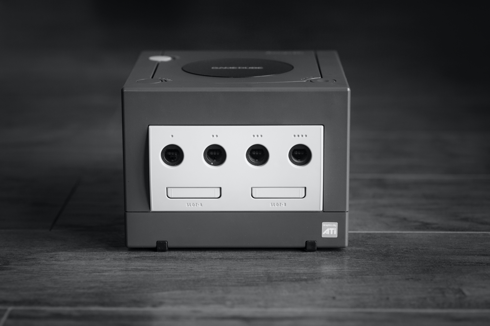
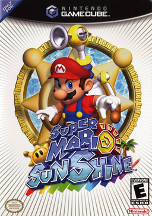
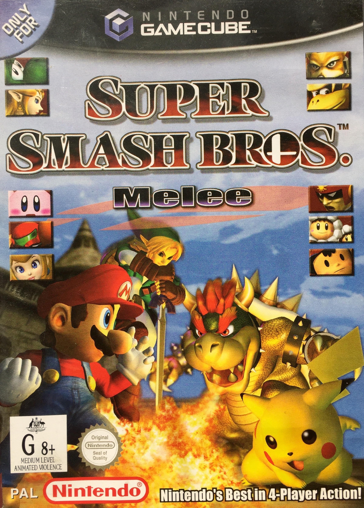

|
The GameCube was released in 2001, it was Nintendos first console that used optical
discs instead of ROM cartridges. The GameCube competed with Sony's PlayStation 2 and
Microsoft's Xbox. GameCube did come close third to Xbox. During this consoles lifespan
of 6 years, Nintendo released over 600 games!
|
 |
|  |
Super Mario
|
|  |
Super Smash Bros: Melee
This was a brilliant multi-player game, bringing all of
your favourite characters into the battlefield, this was
the best selling game with over 7 million copies sold. I
played this one a lot myself!
|
Luigis Mansion was a launch title for GameCube,
and is the second game where you play as Luigi
for the main character, not Mario.
This game was very eerie, and whilst frightening
me, I thouroughly enjoyed how challenging it was!
You start in a Mansion with locked doors, and
defeat ghosts that pop up and scare you by stunning
them with your flash light and using the Poltergust
3000 to vaccum them, there were boss fights where
you would get keys to access other parts of the Mansion,
to eventually try and find missing Mario.
An amazing game from the Super Mario series, I
really loved playing this title, the art work and
gameplay was so different to the other Mario games,
the Story was interesting, making it that much more
enjoyable to play!
The battle system was the same as the original
Paper Mario, and I really wish they had kept
it for future titles, each move you could make
more powerful with extra action commands, you
could dodge incoming hits from enemies, reducing
and sometimes completely negating damage.
Before the release of Breath of the Wild for
the Switch, this was my favourite game from The
Legend of Zelda series, there's a bunch of puzzles,
lots of exploring with 9 large areas, and a new
guide mysterious guide 'Midna'.
I particularly liked this game because you could
play as a wolf due to part of this games storyline,
the 'darkness' of this game really drew me in, it
had a lot of bright and wonderful features also, I
liked fishing and seeing the village cat.
This Pokemon game had a totally different feel
to it than the previous main games, the 3D world
felt very exciting, you did not encounter wild
pokemon in this game, instead you would 'snag'
them from other trainers.
There was a lot of double battles in this game
and with it having a different storyline
to the previous games was really refreshing and
starting with both Umbreon and Espeon felt like
such a treat! This game made me warm to the new generation
of Pokemon.